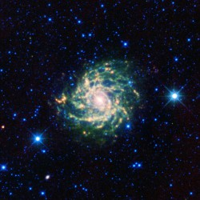

The Wide-field Infrared Survey Explorer (WISE) was commissioned to create infrared images of the sky. The WISE telescope gathered information of light waves in the 2.6 to 26 microns range, light waves that we cannot see with our eyes. This information is then recolored back into the visible light spectrum so we can see it with our eyes. It took multiple images of the same position in the sky to increase the accuracy of the results.
This telescope was designed and built in Logan, Utah at the Space Dynamics Laboratory. To see a video that does a great job of talking about the Wise telescope watch TEDx talk November 2012 by Doug Lemon.
We humans only see visible light. This is a very small portion of all the light that exists. The infrared spectrum includes radiation that has longer wave lengths than visible light and shorter wave lengths than microwave. Infrared radiation is produced by anything that has a temperature above absolute zero. The warmer an object the more infrared radiation is emitted. There are ways to capture this light and produce visible images. These images allow us to see images of things that we cannot see with our eyes. Because the variations are based on temperature, it is a way to see in heat.

The WISE telescope was designed to take infrared images of space. Visible light is one of the few wave lengths that can penetrate our atmosphere. Most other forms of radiation are blocked by the atmosphere. Because the atmosphere blocks the infrared waves, the images must be taken from outside the atmosphere.
The WISE telescope was successfully launched on December 14, 2009. It began its scheduled imaging on January 14, 2010. There are four focal plane arrays that capture the energy and convert it to electrical signals that are used to create the images. These sensors are worth two million dollars each. The sensors must be kept very cold, between 5-7 degrees Kelvin. This is so they do not see their own heat. To do this, the telescope is kept in solid hydrogen. It was launched with enough hydrogen to keep it cold for 9 months.

The WISE telescope was able to gather information that was used to produce very detailed pictures of the universe. These images are far better than any images previously produced. After such a spectacularly successful mission the WISE spacecraft transmitter was turned off on February 17, 2011. It remains in orbit and is currently in hibernation without ground contact awaiting possible future use.

|
||
|  | ||
See more space images from NASA's Jet Propulsion Laboratory site.